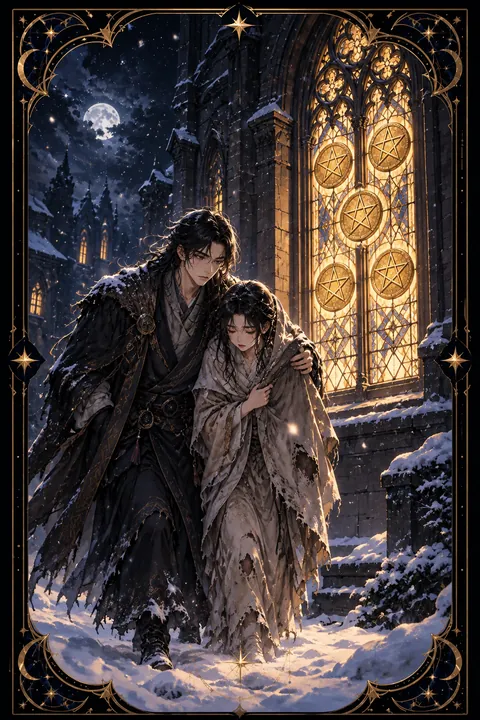

펜타클 5 카드 — 어려움 속 가까이 있는 도움
펜타클 5 카드 한눈에 보기
펜타클 5 카드 상징 읽기

동네보살의 카드 그림은 전통 라이더–웨이트 덱의 뜻을 새 그림으로 옮긴 것입니다. 아래 상징 설명은 전통 덱의 그림을 기준으로 합니다.
눈이 내리는 추운 밤 두 사람이 힘겹게 길을 걷고 있습니다. 한 사람은 목발을 짚고 다른 한 사람은 해진 숄을 두른 채 맨발로 눈길을 밟고 있어 몸과 형편 모두 어려운 처지임을 보여 줍니다.
그들 바로 옆 벽에는 금화 다섯 닢이 그려진 스테인드글라스 창이 따뜻한 빛을 내고 있습니다. 창 안쪽은 도움과 보호, 공동체의 온기를 상징합니다.
그런데 두 사람은 고개를 숙인 채 창을 지나치고 있습니다. 도움이 바로 곁에 있어도 절망과 부끄러움 때문에 알아보지 못하는 마음을 그린 장면입니다.
몰아치는 눈보라는 경제적 어려움과 외로움을, 두 사람이 함께 걷고 있다는 점은 고난 속에서도 곁에 누군가 있다는 사실을 나타냅니다. 이 카드는 어려움을 보여 주는 동시에 고개를 들어 도움을 청하라는 메시지를 전합니다.
펜타클 5 카드 정방향 뜻
정방향 펜타클 5는 경제적인 어려움이나 소외감을 겪는 시기를 뜻합니다. 수입이 줄거나 예상치 못한 지출이 생겨 살림이 빠듯해지고 혼자만 뒤처진 듯한 외로움을 느끼기 쉽습니다.
하지만 이 카드의 핵심은 창문에 있습니다. 도움은 생각보다 가까이 있으며 문제는 그 도움을 보지 못하고 지나치는 데 있습니다. 자존심이나 체념 때문에 도움을 청하지 못하고 있다면 이제는 주변을 둘러볼 때입니다.
가족이나 친구에게 솔직하게 사정을 이야기하거나 공공 지원 제도와 상담 창구를 알아보세요. 당장 줄일 수 있는 지출을 정리하고 꼭 필요한 곳에만 쓰는 긴축 계획을 세우는 것도 도움이 됩니다. 추운 계절은 길게 느껴져도 영원하지 않으며 함께 걷는 사람이 있으면 훨씬 수월하게 지나갈 수 있습니다.
펜타클 5 카드 역방향 뜻
역방향 펜타클 5는 어려운 시기가 끝나 가고 회복이 시작되는 모습입니다. 막혔던 수입이 조금씩 돌아오거나 기다리던 도움의 손길이 닿고 외로웠던 마음을 나눌 사람이 생길 수 있습니다.
오랜 고생 끝에 비로소 불 켜진 창을 발견하고 안으로 들어서는 장면으로 읽을 수 있습니다. 도움을 받아들이는 용기가 회복의 첫걸음이 됩니다.
다만 형편이 나아지기 시작했을 때 서둘러 지출을 늘리는 것은 조심해야 합니다. 밀린 빚이나 미뤄 둔 일을 먼저 차근차근 정리하고 비상금을 조금씩 다시 쌓아 두세요. 도움을 받았던 경험을 기억해 두면 언젠가 다른 사람에게 따뜻한 창이 되어 줄 수도 있습니다. 회복은 천천히 오지만 확실하게 다가오고 있습니다. 지나온 겨울을 부끄러워하기보다 버텨 낸 자신을 인정해 주는 것도 회복의 한 부분입니다.
연애에서 펜타클 5 카드
솔로라면 외로움이 크게 느껴지는 시기입니다. 나를 이해해 주는 사람이 없다는 생각이 들 수 있지만 마음을 닫고 있으면 곁에 있는 좋은 사람도 보이지 않습니다. 새로운 만남을 서두르기보다 먼저 스스로를 따뜻하게 돌보고 가까운 사람들과의 교류를 늘려 보세요.
교제 중인 사람이 있다면 경제적인 어려움이나 서로 소외감을 느끼는 문제로 관계가 흔들릴 수 있습니다. 힘든 시기일수록 서로 탓하기보다 함께 겨울을 건너는 동반자라는 사실을 기억하는 것이 중요합니다. 어려움을 혼자 감추지 말고 솔직하게 나누면 두 사람의 유대가 오히려 깊어질 수 있습니다. 작은 위로의 말과 따뜻한 손길이 지금 관계에 가장 필요한 온기입니다. 혼자 견디기보다 서로의 곁을 지키는 시간이 관계를 더 단단하게 만들어 줍니다.
재회·속마음 질문에서 펜타클 5 카드
재회를 묻는 질문에 펜타클 5가 나오면 지금은 두 사람 모두 마음의 여유가 부족한 시기일 가능성이 큽니다. 상대가 차갑게 느껴지더라도 개인적인 어려움 때문일 수 있습니다. 섣불리 관계를 되돌리려 하기보다 먼저 자신의 생활을 안정시키는 데 힘을 쏟는 것이 먼저입니다. 카드가 뒤집혀 나왔다면 냉랭했던 관계에 온기가 돌 여지가 있으니 부담 없는 안부로 조심스럽게 다가가 볼 수 있습니다. 서로의 형편이 나아진 뒤에 나누는 대화가 더 솔직하고 따뜻할 수 있습니다. 지금 연락을 한다면 부담을 주는 부탁보다 안부를 묻는 짧은 인사 정도가 알맞습니다. 상대의 사정을 헤아리는 태도가 얼어붙은 마음을 녹이는 첫 온기가 됩니다.
일·금전에서 펜타클 5 카드
일과 직장에서는 고용 불안이나 노력에 비해 인정받지 못하는 상황을 겪을 수 있습니다. 혼자 고민을 떠안기보다 신뢰할 수 있는 동료나 선배, 전문 상담 창구에 도움을 구해 보세요. 새로운 기회는 도움을 청하는 과정에서 열리는 경우가 많습니다.
금전 면에서는 지출을 최소화하고 받을 수 있는 지원 제도가 있는지 살펴보는 것이 좋습니다. 빠듯한 시기에는 새 일을 크게 벌이기보다 기본 생활을 지키는 것을 우선하세요. 이 시기에 쌓은 인내와 경험은 형편이 나아졌을 때 큰 자산이 됩니다. 이력서를 다듬거나 필요한 기술을 익히며 다음 기회를 준비해 두세요. 혼자라고 느껴질수록 주변과의 연결을 끊지 않는 것이 중요합니다.
펜타클 5 카드는 예일까 아니오일까
형편이 어렵고 지원이 끊긴 듯한 상황을 보여 주는 카드라 지금 바로 이루어지기는 어렵다는 아니오 쪽입니다. 거꾸로 나온 경우에는 고비를 넘어 회복으로 향하는 조건부 긍정으로 바뀝니다.
자주 묻는 질문
펜타클 5 카드 역방향은 나쁜 뜻인가요?
역방향 펜타클 5는 어려운 시기가 끝나 가고 회복이 시작되는 모습입니다. 막혔던 수입이 조금씩 돌아오거나 기다리던 도움의 손길이 닿고 외로웠던 마음을 나눌 사람이 생길 수 있습니다.
펜타클 5 카드가 연애 질문에 나오면요?
솔로라면 외로움이 크게 느껴지는 시기입니다. 나를 이해해 주는 사람이 없다는 생각이 들 수 있지만 마음을 닫고 있으면 곁에 있는 좋은 사람도 보이지 않습니다. 새로운 만남을 서두르기보다 먼저 스스로를 따뜻하게 돌보고 가까운 사람들과의 교류를 늘려 보세요.
타로 카드는 어떻게 뽑나요?
타로 카드 페이지에서 78장을 섞으면 그중 22장이 펼쳐집니다. 마음이 가는 세 장을 고르면 과거·현재·미래 자리에 놓이고, 한 장씩 뒤집어 자리와 방향에 맞는 풀이를 읽습니다. 정방향과 역방향은 섞는 순간 정해집니다.